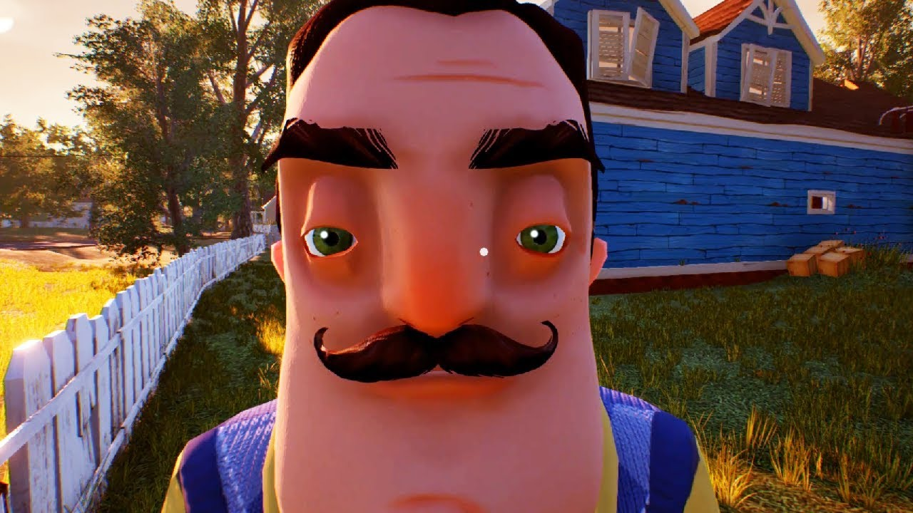

Hello Neighbor alpha 2
Игра делится на три акта, а также на альфа и бета версии. В первом акте главный герой, ещё ребёнок, видит, что сосед запирает кого-то в подвале. Игрок довольно быстро туда пробирается, но сосед ловит его и запирает у себя. Начинается второй акт с увеличенным домом и усложнёнными заданиями. Тогда игрок находит ключ в доме и убегает. В течение акта можно видеть эпизоды о истории семьи Соседа: смерть его жены в автокатастрофе, эпизод падения дочки с крыши дома.Третий акт начинается, когда главный герой, будучи уже взрослым, получает записку о выселении. Он решает отправиться в дом, где прошло его детство. Приезжая, игрок видит сгоревший дом соседа, а спустя некоторое время, он идёт домой спать.После прохождения третьего акта игрок попадает в финальную битву — большую комнату, в которой надо попасть в дом на спине огромного соседа, а для этого надо его повалить. Затем игрок попадает в комнату, где нужно защитить маленького себя от нападений тени, олицетворяющей страх главного героя перед соседом. После того, как тень повержена, можно увидеть соседа, запершегося от другой тени (своего страха) в маленьком доме в большой белой комнате. После этого главный герой просыпается, смотрит на старую фотографию и приступает к разгрузке машины, во время этого процесса идут титры
В Hello Neighbor игрок оказывается в новом доме, напротив которого живёт странный и подозрительный сосед и, похоже, он скрывает в своем подвале что-то пугающее. Задача игрока — проникнуть в дом соседа и собрать предметы, необходимые для разблокировки доступа к его подвалу. Когда игрок исследует дом соседа, он не должен быть замечен им, иначе тот будет преследовать игрока и вероятно поймает его. Если игрок будет пойман, то он появится в своём доме и ему придется снова проникать в таинственный особняк.[6]. У игрока четыре слота инвентаря; предметы одного и того же типа не могут складываться вместе в одной ячейке[7]. Дом соседа имеет огромное количество комнат, в каждой из которых есть предметы и устройства, так или иначе позволяющие пройти игру; в некоторых эпизодах это делает игру похожей на головоломку, при этом одно испытание в ней как бы вытекает из другого. Многие считают, что надо найти четыре предмета и положить их на полке. Но на самом деле, достаточно лишь достать и положить кепку это даст доступ к генератору который надо отключить и через пару минут разморозится ключ-карта! А спускать воду и заходить в комнату с гитарой вообще не имеет смысла! Ну разве-что просто поиграть на ней. И всё это необходимо сделать так, чтобы игрока не поймал сосед. Также в игре часто присутствуют элементы паркура. В доме есть поистине необычные вещи, например, железная дорога, по которой можно пустить настоящий вагон (и даже в нём прокатиться), двери, открывающиеся только ночью и многочисленные решётки, открываемые посредством переключателей. Эти моменты, а также сама структура дома наводят на мысль о том, что всё это происходит во сне или воображении игрока. Также игрок может получать дополнительные способности — невидимость от соседа, двойной прыжок и т. д. Для их получения надо при помощи специальных ключей открывать мини игры. Рекомендуется прокачивать данные способности, поскольку они понадобятся в финале игры.
Первая предварительная версия игры была выпущена в сентябре 2016 года. Вторая альфа «Hello Neighbor» была выпущена вскоре после этого[8][9][10]. Игра прошла в бета-фазу в августе 2017 года. Hello Neighbor изначально планировали выпустить 29 августа 2017 года[11], но было объявлено, что её выход был перенесен на 8 декабря 2017 года, из-за технических проблем с движком игры.[12]